Throwaway. Same 2024–2026 numbers. Top is the SVG card (GitHub Pages later). Bottom is the gist you’d open from the pin.

Open detailed-gist.md in the editor Markdown preview for rendered tables. Raw text:
# seuthootDev (@seuthootDev) 2024 Quiet Year · 💤 low activity 2025 Builder · 📦 2 long-lived 2026 ● Open Source Contributor · 🔀 +37 ext PRs From a quiet year to Open Source Contributor --- ## Activity Commit days 10 → 101 → 130 Active repos 1 → 13 → 17 Own PRs 0 → 24 → 63 External PRs 0 → 0 → 37 ## 2024 Quiet Year A floor year. Every axis sits far below what came next. ## 2025 Builder Repos jumped 1 → 13. TypeScript. Still zero external PRs. ## 2026 ● Open Source Contributor GDScript. 63 own PRs and a first wave of 37 external PRs.
detailed-gist.md has the full tables and unicode bars.